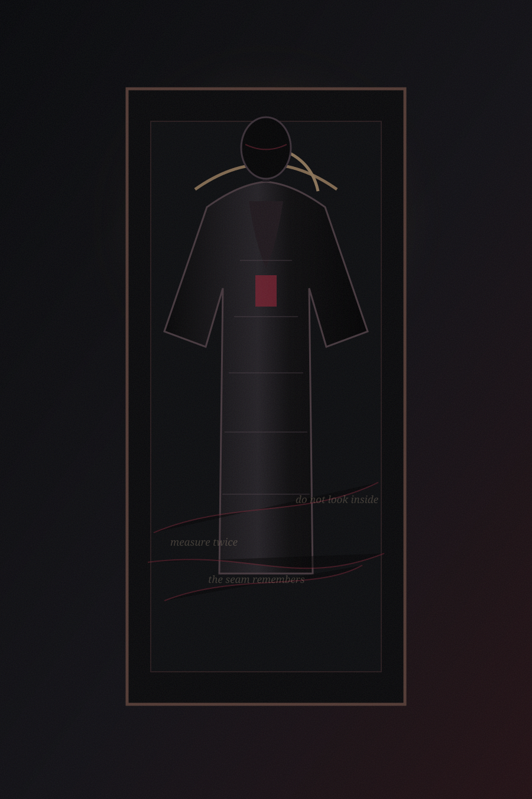

Book Two · Next project
Kasse Clothed
There are things we wear to become someone else. There are things that learn how to wear us.
An early horror project built around identity, appearance, and the unsettling distance between the person we present and whatever remains underneath.
Early project · story still taking shape